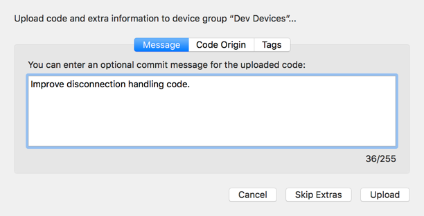

Squinter 2.0
‘A Squirrel Integrator’
Latest Release: 2.0.122 (July 17, 2018)
Download Squinter
Please verify the integrity of the download with the SHA-1 or SHA-256 checksums.
| File | Squinter_2_0_122.dmg |
|---|---|
| File Size | 6.3MB |
| SHA | 1e1d3742ce8b120f67514f45300742517d3d2bf5 |
| SHA 256 | f7264d8209e07c85cd6447c6d4155e9cf66eb5eefefab8e6cb8f1999936dcb56 |
About Squinter
Squinter is a utility to help you work on Electric Imp software development projects using your own editor and code files you keep in a local folder — which may also be synchronized with a cloud service like Dropbox or a version control system like GitHub.

With Squinter and Electric Imp's impCentral™ API you can:
- Work on your Electric Imp project code in your favourite text editor
- 'Compile' in local library files before uploading the complete code to the Electric Imp impCloud™
- You can take charge of your devices:
- Assign them to application firmware (via device groups)
- Update their code
- Reboot devices to run newly uploaded code
- View device logs
- And much more...
Important
Squinter 2.0 is being made available in a pre-release Beta version which is not feeature-complete and may contain code errors that may impact your own code. You should not use Squinter with commercially sensitive projects and related code.
What's New
- Work with impCentral API entities: products, device groups, devices and deployments.
- Add commit messages to code uploads, and view them later
- Recently opened project files remembered for easy access, via menu and dock icon.
- Squinter's dock icon functionality persists after the app has closed if you choose to keep the icon in the dock.
- Re-written and improved library and file compilation.
- Updated UI will new toolbar buttons, and visual device status icons (online/offline, logging).
- Highlighted error and warning messages to make them easier to spot
Release Notes
2.0.122 (17 July 2018)
- Project Inspector now displays as an outline, allowing you to close or expand sections for clarity.
- Add RSSI readout to Device Inspector.
- Refactor some key code components.
- Edits to Device Groups other than Development Device Groups are no longer rejected by the server.
- New Projects now appear correctly in the Project Inspector.
- Show correct log font when double-clicking a file or loading from the Dock Tile's menu.
2.0.121b14
- Present Squinter's own log message tags: Device, Agent, Server.
- Significantly speed up writing text to the log.
- Break out list of products on which you are collaborating.
- Shared products are listed by owner account.
- Add sign-in support for multiple impClouds, ie. AWS and Azure.
- Improve account switching messaging and account labelling.
- Improve EI library checking and reporting.
- Add clearer warnings when libraries and/or files have been removed prior to compilation.
- Support file versioning.
- Use
#version "x.y.z"to indicate a file’s version. - As before class versions should entered as
static version = "x.y.z"or
const version = "x.y.z"within the class definition.
- Use
- Add support for eight simultaneous logging devices (from five).
- Add preference to keep devices' status updated.
- Improve commit list display.
- Kill all connections when the Mac is about to sleep.
- Fix Preferences panel's bold text checkbox operation.
- Fix placement of Open and Save panels' accessory views.
- Fix appearance of new Device Groups in the Project Inspector.
- Final beta release!
2.0.121b13
- Initial MacBook Pro TouchBar support.
- Provide optional periodic updates of devices' connection status (checks every five minutes).
- Fix regression that prevented Products being downloaded to Projects.
- Inspector correctly updated when a
.squirrelprojfile is double-clicked. - Annoying 'moving buttons' bug fixed on Inspector.
- Fix unwanted change of font colour after viewing preferences.
- Fix double-posting of Electric Imp library check readout.
- Handle impCentral API access tokens that could expire en route to server.
2.0.121b12
- New project, device Inspector.
- Open source code, libraries and other files from the Inspector.
- Access agent URLs from the Inspector.
- Create production, pre-production, factory and factory test groups.
- Assign production groups as factory group targets.
- Assign pre-production groups as factory test group targets.
- Preliminary support for listing test blessed devices.
- Improved Assign Devices sheet.
- Fix Open All Recents issue with lost files.
- Fixed an issue in which adding files to a new project did not correctly create a new device group.
- Fixed an issue in which files in sub-folders relative to the project file were not found.
2.0.121b11
- Add support for polite deployment: minimum supported deployments, conditional restarts.
- Add user-definable colours for logging devices' log posts.
- Re-arrange other preferences.
- List a project's Device Groups by type
- Improve log streaming code.
- Improve error and issue reporting.
- Improve timestamp formatting.
- New clear log window icon.
- Fix mis-coloured Log Stream toolbar icon when logstream fails to connect.
- Minor bug fixes.
2.0.121b10
- Fixed an issue cause the app to crash upon launch for new users.
- Corrected the timestamp display for certain log types.
2.0.121b9
- Initial public beta release.
Known Issues
- Crashes occurring when Squinter starts are typically the result of changes made to the app's preferences during
development. The first action to take is to delete the file
~/Library/Preferences/com.bps.Squinter.plist. You may also need to remove the folder~/Library/Caches/com.bps.Squinter. - Squinter 2.0 will open and convert project files from older versions of Squinter to an updated file format that is not compatible with older versions of Squinter. Make sure you do a 'Save As...' to keep a copy of the updated project file. Take care not to overwrite the original if you wish to preserve it. Switching or overwriting project files will not affect your source code.
- Squinter 2.0 works with impCentral API entities not Build API / Electric Imp IDE entities, so you may wish to keep your copy of Squinter 1.0 for work with older projects until you migrate them to impCentral.
- The impCentral API will not allow you to create products with the same names as existing models, so for manual model migration, you will need to delete the model before you create the product, which you can do opening the old project file in Squinter 2.0. Squinter will report an API error if you attempt to create a product (or open an old project file, which automatically creates a product) without deleting the model first.
- Streamed log items occasionally not displayed (but are present in historical log)
- Offline changes made to projects and/or device groups cannot yet be sync'd with the impCloud. Avoid working with Squinter 2.0 offline.
- Collaboration functionality has not yet been included.
- Online help is available but not yet complete
- Squinter 1.0 will not see Squinter 2.0 as an available update. At this time, you must install Squinter 2.0 manually.
Electric Imp Accounts
Squinter requires an Electric Imp account. Sign up is free at impcentral.electricimp.com. Production functionality requires an Enterprise account, for which you must be an Electric Imp customer. Log in using the Account menu:

Working With Projects and Products
Squinter works with 'projects', each of which is stored as a project file on disk. Each Project links to an
impCentral 'product' and references the 'device groups' (see below) that that product contains. For each device
group in the product, the project records which local files contain the source code that will be deployed to that device
group. Project files are identified by the .squirrelproj file extension. Squinter lets you
create new projects, either from scratch or by downloading products that already exist in the impCloud.

Projects are listed in the Open Projects submenu in the Projects menu, which also presents actions you can perform on the currently selected project. You can also select a project from the Current Project popup in Squinter's main window.
New projects are saved by default to Squinter's working directory, which you can set in the app's Preferences panel. However, you can also navigate to an alternative location when you save the project. To create a new Project, click on appropriate toolbar button or select the relevant option from the Files menu ( Cmd-N ). This menu also lists recently opened projects — as does Squinter's dock icon. You can also save your current project to a new file if you wish.

You can create projects when you are not signed in to your Electric Imp account — perhaps because you're out of WiFi range — and you can upload these at a later time, when you have logged in.
The Projects menu also presents a list of products associated with your Electric Imp account. Each project maintains a one-to-one mapping with a uniquely named product. New projects are uploaded to the impCloud as products, and existing products can be downloaded as projects, complete with any device groups they contain and the code deployed to those device groups.

Squinter also allows you to perform tasks on a selected product, including linking it to an existing project, or deleting it from the impCloud. Only products that contain device groups with no assigned devices (or no device groups at all) can be deleted.
When you change a project or one of its device groups, Squinter will indicate to you that the project file needs
to be saved. It does so using the green circle next to the Current Project popup in the main Squinter window:
an empty circle tells you the currently selected project has changed and may need to be saved. If you don't wish to
save the changes, you can choose to ignore them when you quit Squinter or close the project.
Working With Device Groups
Squinter lists all of the device groups that belong to a given project. When you select a Project, its device groups, if any, are listed in the Project's Device Groups submenu in the Device Groups menu. Initially the first device group, listed alphabetically, is selected when you open or select a project. Only the device groups that belong to the currently selected project are listed, so to view a device group from another project, just select or open that project.

If any devices have been assigned to a device group, they are listed as submenus to each device group listed in the Project's Device Groups submenu.
When you select a project or one of its device groups, the Device Groups menu enables a number of actions which can be performed on the selected device group. This includes editing its name and/or description, getting information about the code deployed to it, and even deleting the device group from your project and the impCloud. However, you can't delete a device group that has devices assigned to it. You can restart simultaneously all of the devices assigned to the selected device group here too.
Do not delete device groups if you are working offline as they will not be removed from the impCloud. There is currently no way to delete a device group locally and have it removed from the impCloud when you connect later.
Because the code you work on will be uploaded to a given device group rather than to a project (as was the case with Squinter 1.0), you will find the commands that allow you to access a device group's source code files (and any libraries or other Squirrel files they import) from submenus included in the Device Groups menu.

You can add a new device group to a project either by selecting the option from the Project's Device Groups
submenu, or by choosing Add source files to Project from the Files menu. This can be used to add agent and/or
device code files to an existing device group, or to add them to a new nevice group created there and
then.
Working With Devices
Squinter keeps track of your development devices. It lists these in the Device Groups menu's Project's Device Groups submenu, alongside the device group each device is assigned to. Unassigned devices are listed in their own submenu under the Device menu. Specific devices can also be selected from the Current Device popup menu in Squinter's main window.

In each of these lists, each device's status — online or offline; logging or not — is listed
alongside their names:  for online and
for online and
 for logging.
for logging.
The Device menu presents actions you can perform on the currently selected device, including getting information about it, renaming it, removing it from your account, and removing its association with a device group (unassign it).
You can also force the device to restart. If you want to force all of the devices assigned to a given device group to restart, not just the selected one, there's an option for that in the Device Groups menu.
To update the information Squinter holds about all of of your development devices, select the Update Devices' Status command in the Devices menu. This can be selected at any time, and there is an option in Squinter's Preferences panel to have this information retrieved automatically whenever the app starts up. You can also choose to have this information automatically updated periodically.

The Devices menu also maintains a submenu of unassigned devices — those which have not yet been assigned to a device group or have been removed from one. When you add a new development device to your account, it will first appear in this list, though you may need to update the menu (use the Update Devices' Status command) to see it. Selecting a device from this list will affect the Devices menu but not the currently selected device group.
In addition, Squinter’s Inspector panel can be called up (Cmd-Alt-I) to provide persistent device, and project information:

This panel will update as you select devices and/or load or select different projects.
Incorporating Libraries Into Your Code
Squinter lets you incorporate multiple files into the source code that is deployed to a given device group. Electric Imp applications comprise two files: one for device code, the other for cloud-based agent code. Squinter lets you embed into them links to other files, such as local libraries.
For example, you might want to use the same library in multiple device groups — they all use the same sensor, say — even between device groups that belong to different projects. Sharing a single library file allows you to update that file without having to edit every listing of device or agent code that uses it. You just recompile each device group's source code to incorporate the changes you've made to the single library file.

Squinter expects your primary source code files — a device group's base device and agent code — to be
named in the standard Electric Imp schema: *.agent.nut and *.device.nut for, respectively,
your agent and device code. The two identifiers (represented here by the wildcard *) need not be identical.
Local library files should be entered into your agent and device source code using the following syntax:
#import "library_filepath\library_filename"
#include "library_filepath\library_filename"This is to distinguish these libraries from Electric Imp online libraries, which use the #require
directive.
The name of the library file is arbitrary, but *.class.nut and *.library.nut are the
recommended forms. You may include a full Unix filepath; if you only provide a filename, Squinter expects the file to
reside in the same directory as the *.squirrelproj project file (see 'Working with Projects and
Products', above). You can specify files that need to be reached by moving up through
your folder hierarchy by including .. to mean 'go up one level'. For example:
#import "../../../generic/bootmessage.nut"This means go up three folders then down to the folder generic and thus to the file bootmessage.nut.

Internally, Squinter stores all file locations as paths relative to the project file, though you can choose how file
paths are displayed by changing the app's Preferences. When Squinter compiles code, it re-checks the links it has
against those included in the #include statement, updating its internal record as required. Squinter will
warn you if you move a file while is running.
Squinter lets you store both library files and blocks of Squirrel or other data in *.nut and
*.txt files. At compilation, all of these sources are inserted into a master copy of the source code, and
it is this 'compiled' Squirrel which will be uploaded to the selected device group.
Deploying Code
Squinter 2.0 allows you to upload compiled code direct to the selected device group: select the Upload option in the Device Groups menu. Alternatively, holding down the Option key makes this option Upload with Extra Information; when selected, it pops up a panel into which you can enter an optional commit message, an optional source URL and an optional set of one or more tags for the deployment. Click on the Upload button to include any extra information you add to the upload, or click Skip Extras to upload just the code.

Both of these options are available as separate toolbar items:


The Upload and Upload Extra toolbar buttons
The Upload Extra Information item is not part of the standard Squinter toolbar layout, so you will need to click on Customize Toolbar... in the 'View' menu to add it. You may also wish to add the Show Commits button:
The Show Commits toolbar button
This will call up a list of all the commits/deployments made to the currently selected device group:

Having uploaded code, you can restart the currently selected device by selecting Restart from the Device menu,
or restart all of the devices assigned to the current device group by selecting Restart from the Device Groups
menu.
Debugging Code
You can retrieve the most recent log entries for the selected device in one go (up to a maximum of 200), or you can stream logs from the device: entries will appear in Squinter's main window in real time. You can currently only stream from up to five devices at a time. This is a limitation of the impCentral API.

When you upload code — using the Upload button or the Device Groups menu option — the Electric Imp impCloud will perform a syntax check. Any errors it spots will be reported in Squinter's log window. Line numbers refer to the compiled code, so you can use two actions in the View Compile Source submenu under Device Groups to list the current compiled code to help you track down the errors. These two options — one for device code, the other for agent code — will list the compiled source for the currently selected device group.
If the log window becomes too crowded, you can clear it using the Clear button in the toolbar,
which is also home to a number of shortcuts to various functions provided by Squinter's menus. You can also print the
current contents of the log window if you have a printer.
Configuring Squinter
To take full advantage of Squinter's features, you will need an Electric Imp account. With Squinter 2.0 you no longer require a Build API key. Instead you must sign into your account using your Electric Imp username and password before Squinter can access the impCloud on your behalf. When you first run Squinter 2.0, it will ask you for these credentials and give you the option to store them securely in your keychain to automate login in future. The Account menu provides a means to log into your account later if you choose not to do so at the start, or to subsequently sign out.

Squinter's Preferences panel includes a setting to log in when Squinter starts up. Other options include compiling the code linked to all of a project's device groups when a project is opened, and automatically retrieving the latest device and product information at log-in.
In addition, Preferences contains settings for the colour of Squinter's log pane, which mono-spaced font is used, and how file paths should be displayed. You can also choose how many recently opened project files Squinter will remember for you, and how many historical log entries, device history events and past commits will be retrieved when you ask for any of these items.

Squinter's toolbar is customisable: select the appropriate option from the View menu to make changes to the initial, standard layout. You can also choose to hide the toolbar. Squinter supports full-screen mode: click on the green traffic light at the top left of the window.

Squinter would not be possible without open source software contributions from a number of developers. They are
listed in the Acknowledgements section of the Help menu, along with links to the source code Squinter
uses.
Updating Squinter
You can check for Squinter updates by using the appropriate command in the Squinter menu. You can also tell Squinter to check for updates on your behalf: just check the relevant box in the Preferences panel.
Copyright © Tony Smith, 2014-2018